行程速览
三天一条由近及远的跳岛线：第一天在朱家尖踏浪，第二天上普陀山礼佛，第三天去桃花岛寻侠、回沈家门吃海鲜。一天一岛，船程都短，基本不绕路。
Day 1 · 上岛，把脚印留给朱家尖
关键词：跨海大桥、蜈蚣峙码头、海滨浴场、黑色卵石滩。第一天以"顺利上岛"为主，不赶路。
怎么去舟山（上海出发）
上海市区 → S4/G15 → 宁波绕城 → 甬舟高速（G9211），经舟山跨海大桥（金塘大桥等连岛工程）抵达舟山本岛、朱家尖，全程约 230 km、3.5–4 小时。蜈蚣峙码头停车场较大，节假日尽量早到，停车收费以现场为准。
上海南站 / 南浦大桥 / 虹桥 → 舟山普陀长途客运中心，或直达朱家尖蜈蚣峙码头，约 4–4.5 小时，票价约 95–150 元。选终到"蜈蚣峙码头"的班次，最方便接驳上岛。
蜈蚣峙码头是旅游集散中心，普陀山、桃花岛、东极方向的船班都在此衔接，先到码头把后续船票和时刻确认好最省心。
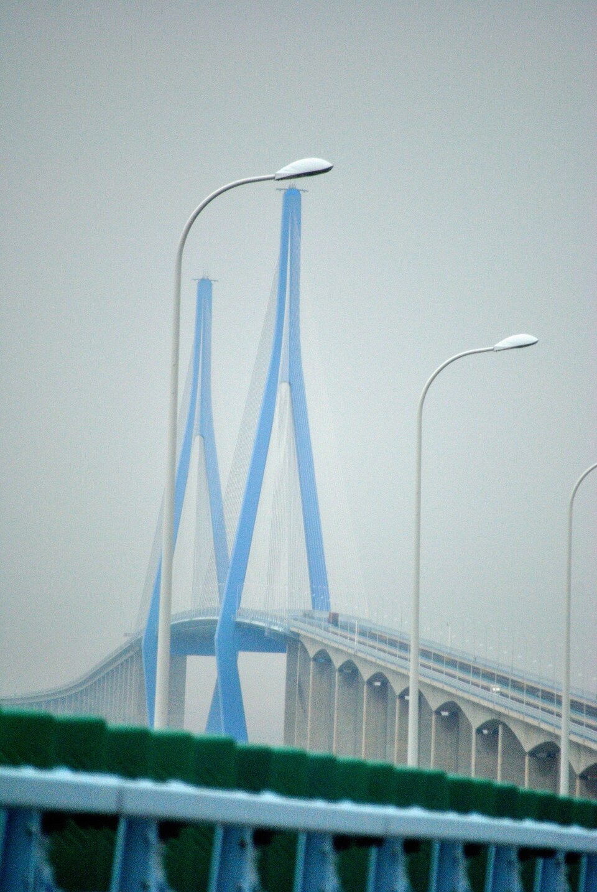
从蜈蚣峙码头玩到乌石塘
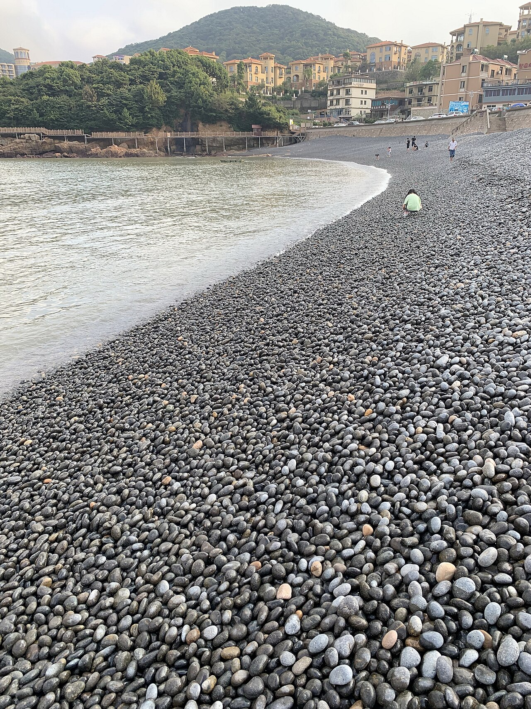
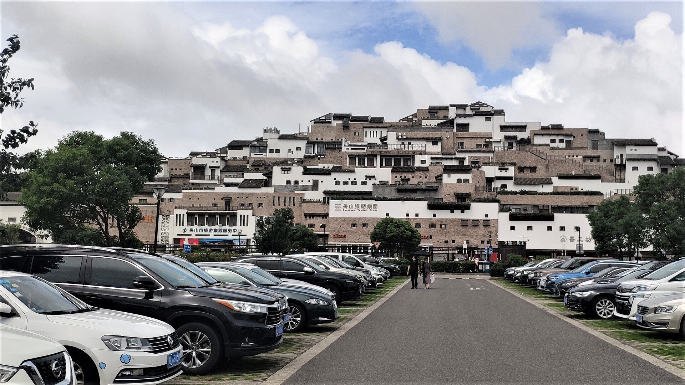
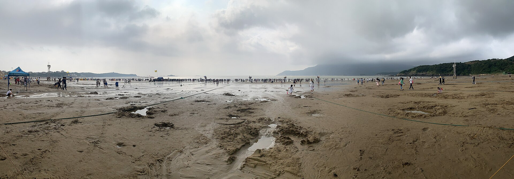
Day 2 · 海天佛国，一日普陀山
关键词：南海观音、千年古寺、千步沙。中国四大佛教名山中唯一坐落海上的道场，一天走完核心寺院与海岸。
从南海观音走到千步沙
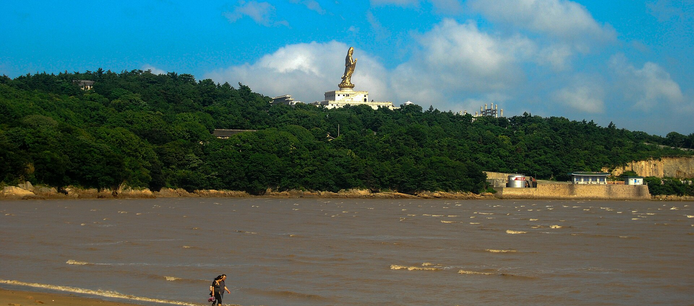
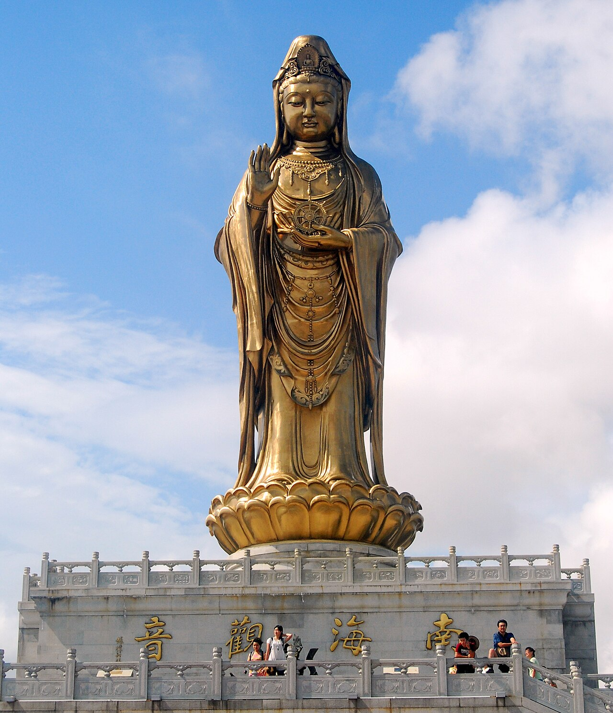
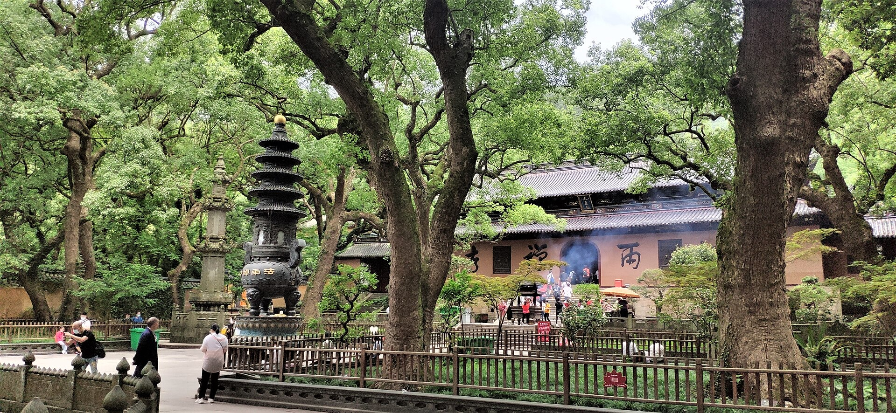
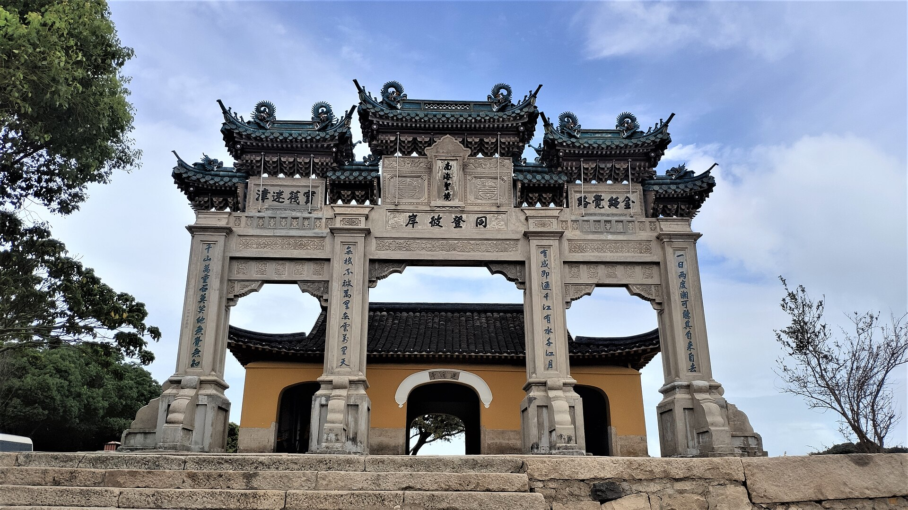
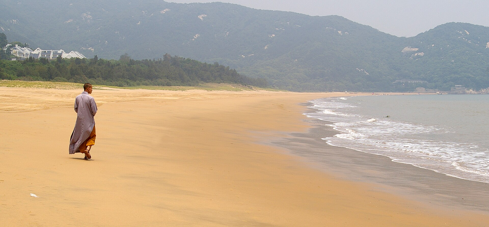
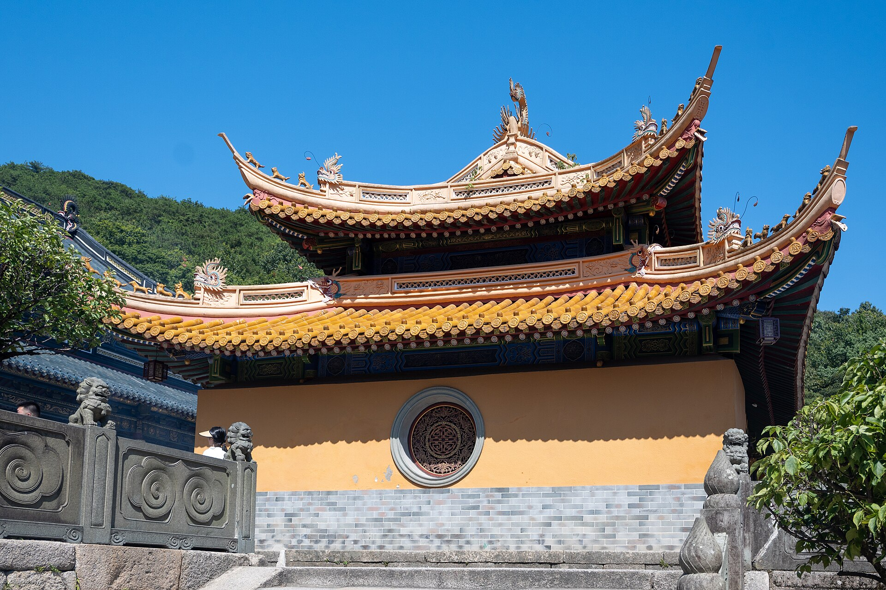
Day 3 · 桃花岛寻侠，以一顿海鲜告别
关键词：桃花寨、塔湾金沙、沈家门十里渔港。上午去金庸笔下的桃花岛，下午回到中国最大的渔港收尾。
从桃花寨到沈家门渔港
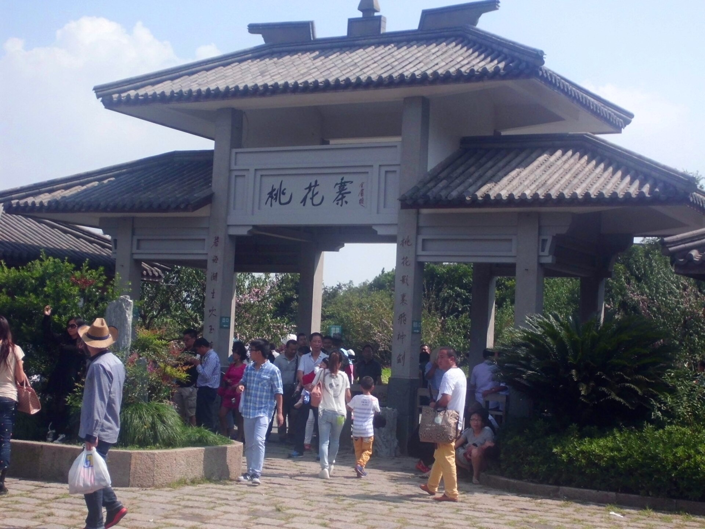
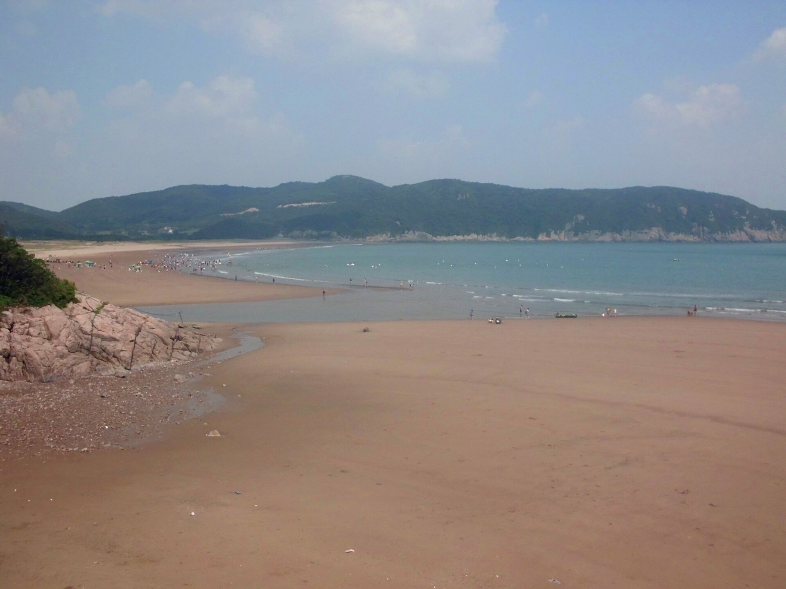
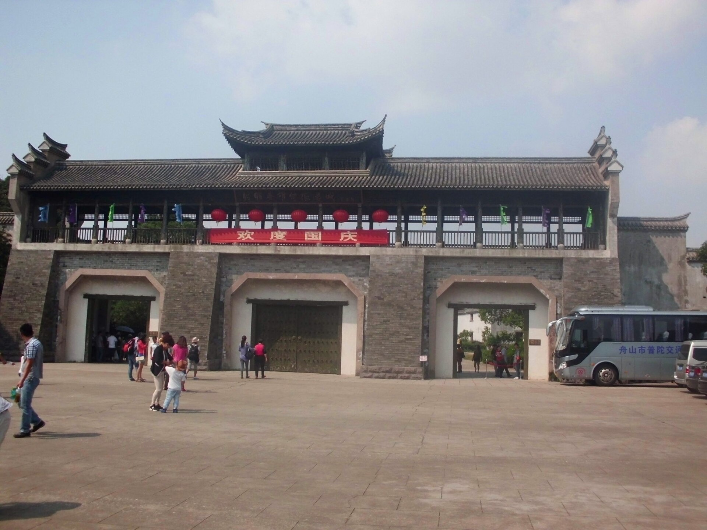
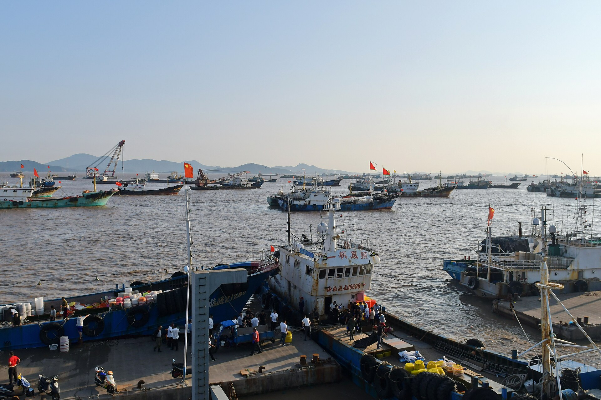
住在哪里
三天动线都以朱家尖蜈蚣峙码头集散，两个思路：住码头附近接驳最省心，或住海滨 / 沈家门枕着渔港烟火。价格为参考区间，节假日上浮，以预订平台实时价为准。
慈航广场片区
住码头旁，三天上岛船班最省心，餐饮、购物、票务都集中在楼下，拖行李也方便。
海滨度假酒店 / 民宿
临海而居、步行到沙滩，适合踏浪、看海上日出，度假感最足。
沈家门城区酒店
中国最大渔港旁，海鲜排档下楼即达，烟火气足、性价比高，第三天动线最短。
普陀山山居 / 寺院客房
想二刷、赶寺院早课或看清晨无人的海，可住一晚岛上，价格偏高、房源紧。
舟山味道
舟山的味道 = 海鲜 + 渔港 + 素斋。海货讲究"刚上岸"，吃的是一个鲜；上了普陀山，又有清净的素面素斋。
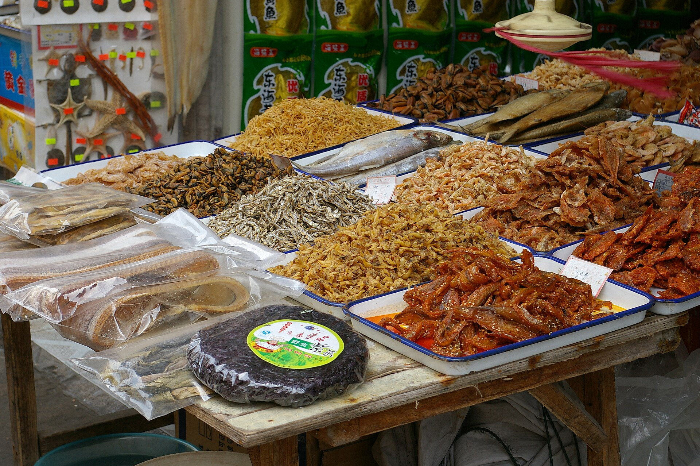
贝类、虾干、鱼鲞琳琅满目——真实照片，摄于舟山渔市（Wikimedia Commons）。
清蒸 / 红烧小海鲜
梭子蟹、带鱼、皮皮虾（虾虎）应季而食，做法简单，吃的就是原味的鲜。
海鲜面 · 海鲜年糕
码头与城区常见，浇头现炒、汤头鲜甜，一顿就能尝好几样海味。
葱油海瓜子 · 辣螺
本地特色小贝壳、小海螺，葱油一激香气十足，是佐酒的一绝。
淡菜（贻贝）汤
舟山一带盛产贻贝，汤色奶白、味道鲜浓，平价又鲜美。
红膏呛蟹
舟山名菜，梭子蟹以盐卤呛制，红膏满盖、咸鲜回甘。
黄鱼鲞 · 各类鱼鲞
渔家传统风干海鱼，拿来烧肉下饭，是地道的海岛家常味。
沈家门夜排档
现挑现做、灯火通明，是舟山最有烟火气的一顿；记得先问价。
普陀山素斋 · 素面
寺院旁的素面、素斋清净快捷，礼佛之日正好尝一尝。
海鲜干货伴手礼
虾皮、紫菜、鱼干、淡菜干，渔市与商超都有，适合带回家。
舟山最出名的海鲜排档，第三天晚餐就在这。
码头快餐、海鲜面，上岛前后解决最方便。
餐馆集中、选择多，适合正经吃一顿。
素斋、素面与简餐，礼佛当天用餐。
实用贴士
跳岛旅行，海况和船班是关键，几条小提醒：
最佳季节
海岛冬暖夏凉，9–10 月天蓝海清、体感舒适，也能避开暑期人潮与长假高峰；夏秋季留意台风预报。
船班与天气
跳岛全靠船，遇大风、大雾可能停航，行程预留半天弹性；船票提前在官方渠道购买，节假日更紧张。
防晒与晕船
海上紫外线强，备好防晒霜、帽子和墨镜；容易晕船者提前服药、尽量坐通风处。
门票与预约
普陀山门票与船票分计，各景区门票以官方为准，节假日提前实名预约、错峰上岛。
吃海鲜避坑
认准明码标价、先问价再点单；海鲜配姜醋、别贪凉，选择正规排档和餐馆。
自驾与停车
甬舟高速节假日易拥堵，尽量早出发；码头停车位有限、先到先得，按现场指引停放。
下一本旅行地图
舟山群岛远不止这"金三角"。更远处的东极岛——庙子湖、青浜"海上布达拉宫"、东福山的大陆第一缕日出，是下一趟想跳的岛。
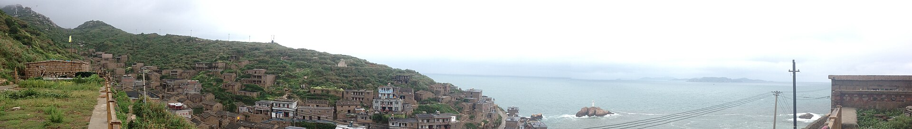
石屋依山、渔港向海，下一本旅行地图见（真实照片 · Wikimedia Commons）。